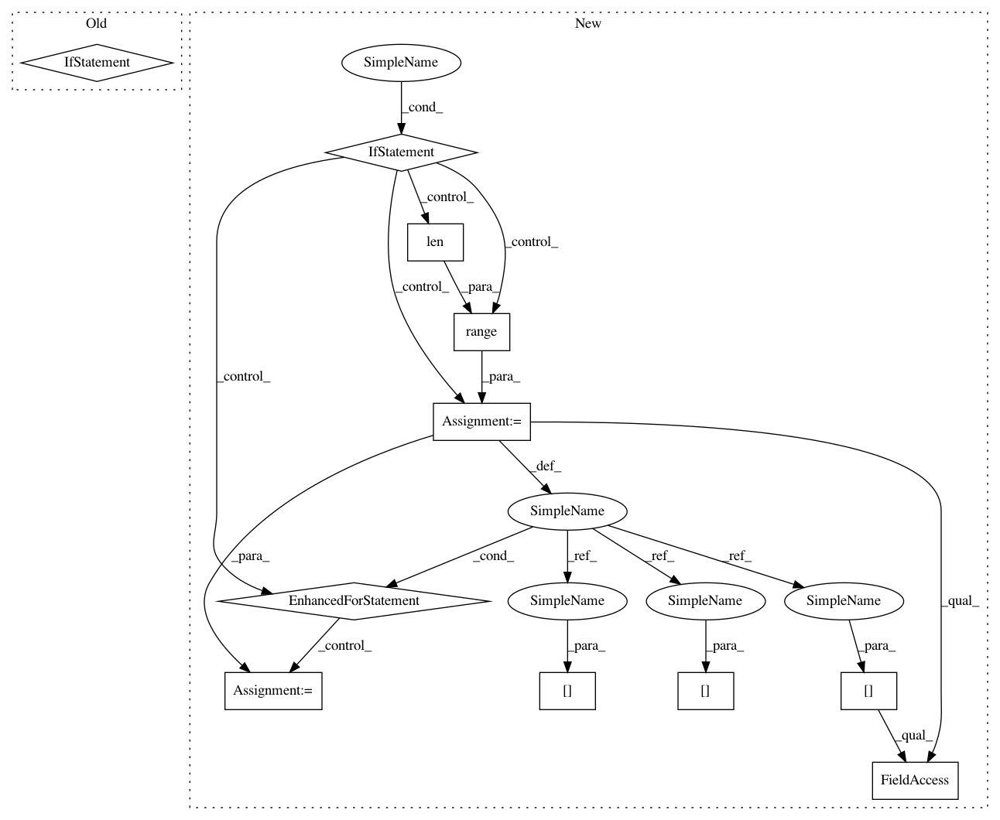

f9e68489ead1381f68961d5dddd01f69e312d6ad,opennmt/utils/misc.py,WordCounterHook,after_run,#WordCounterHook#Any#Any#,103
Before Change
elapsed_time, _ = self._timer.update_last_triggered_step(
global_step)
if elapsed_time is not None:
if "features" in results:
delta_features = results["features"] - self._last_features_count
_summarize_value(delta_features / elapsed_time, "words_per_sec/features")
self._last_features_count = results["features"]
if "labels" in results:
delta_labels = results["labels"] - self._last_labels_count
_summarize_value(delta_labels / elapsed_time, "words_per_sec/labels")
self._last_labels_count = results["labels"]
After Change
return tf.train.SessionRunArgs(fetches)
def after_run(self, run_context, run_values): // pylint: disable=unused-argument
if not self._counters:
return
results = run_values.results
global_step = results.pop()
if self._timer.should_trigger_for_step(global_step):
elapsed_time, _ = self._timer.update_last_triggered_step(global_step)
if elapsed_time is not None:
for i in range(len(self._counters)):
name = self._counters[i].name
value = (results[i] - self._last_count[i]) / elapsed_time
self._last_count[i] = results[i]
if self._summary_writer is not None:
summary = tf.Summary(value=[tf.Summary.Value(tag=name, simple_value=value)])
self._summary_writer.add_summary(summary, global_step)
tf.logging.info("%s: %g", name, value)
In pattern: SUPERPATTERN
Frequency: 3
Non-data size: 11
Instances
Project Name: OpenNMT/OpenNMT-tf
Commit Name: f9e68489ead1381f68961d5dddd01f69e312d6ad
Time: 2017-10-09
Author: guillaume.klein@systrangroup.com
File Name: opennmt/utils/misc.py
Class Name: WordCounterHook
Method Name: after_run
Project Name: OpenNMT/OpenNMT-tf
Commit Name: f9e68489ead1381f68961d5dddd01f69e312d6ad
Time: 2017-10-09
Author: guillaume.klein@systrangroup.com
File Name: opennmt/utils/misc.py
Class Name: WordCounterHook
Method Name: after_run
Project Name: fgnt/pb_bss
Commit Name: 32d73ccb0d80db3727775fb9928f5f151ddaaab5
Time: 2015-10-06
Author: cbj@mail.uni-paderborn.de
File Name: nt/speech_enhancement/mask_estimation.py
Class Name:
Method Name: simple_ideal_soft_mask
Project Name: xinntao/BasicSR
Commit Name: ee1a026a7ad52bd8e807024e41d70276028c59e2
Time: 2020-11-27
Author: wxt1994@126.com
File Name: test_scripts/test_face_dfdnet.py
Class Name: FaceRestorationHelper
Method Name: get_face_landmarks_68